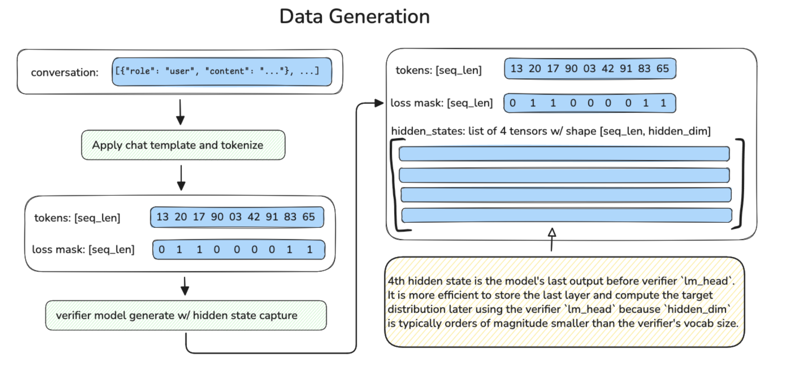
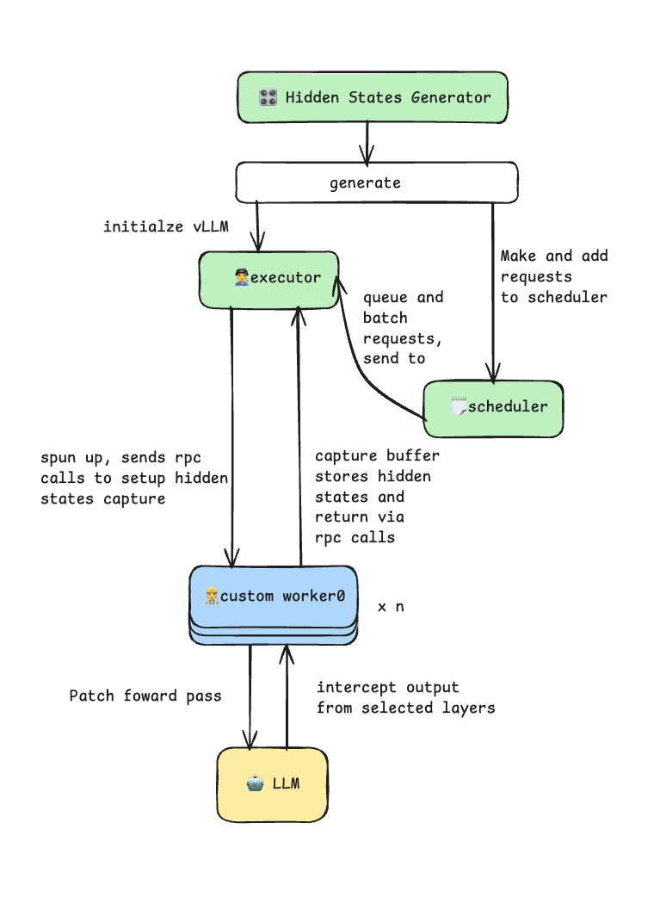
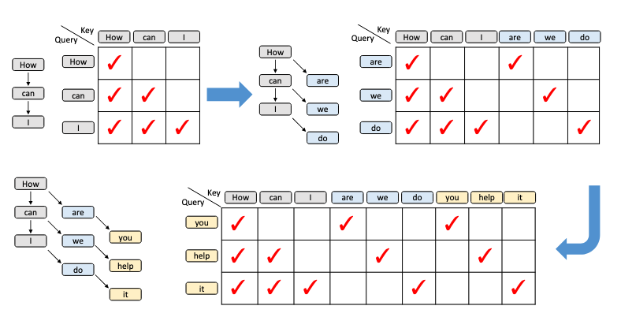
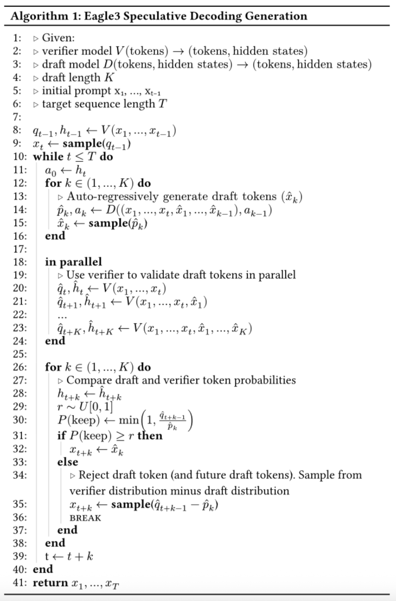

Diving into speculative decoding training support for vLLM with Speculators v0.3.0
Key Highlights
- Speculative decoding serves as an optimization to improve inference performance; however, training a unique draft model for each LLM can be difficult and time-consuming, while production-ready training utilities for generating models for vLLM are scarce
- Speculators v0.3.0 provides end-to-end training support for Eagle3 draft models that can seamlessly run with vLLM
- Support for training includes offline data generation using vLLM as well as training capabilities for single- and multi-layer draft models, for both MoE and non-MoE verifiers
Inference at scale
Over the past decade, LLMs have expanded rapidly in both scale and capability, bringing with it increasing demands on inference performance. As LLMs generate tokens sequentially—with each token requiring a full forward pass through billions of parameters—the cost of generation scales quickly. As model sizes continue to rise, this sequential computation becomes a significant bottleneck, making today’s LLMs incredibly capable yet often slow.
One promising optimization to alleviate this challenge is speculative decoding, which accelerates generation by allowing smaller draft models to propose tokens that the larger model can quickly verify.
This blog will explore speculative decoding as an optimization technique, introduce the Speculators library, and dive into it and its recent v0.3.0 release. Speculators provides researchers, engineers, and ML practitioners the tools to generate speculative decoding models end-to-end with seamless vLLM integration.
What is speculative decoding?
Speculative decoding allows LLMs to generate multiple tokens in a single forward pass. It works by utilizing a small “draft” model in conjunction with the full sized “verifier” model (i.e, the original LLM that you are trying to serve). The draft model which is cheap and fast to run (often just a single transformer block) does the heavy lifting and auto-regressively predicts several tokens. The verifier model processes these tokens in parallel. For each token, the verifier determines if it agrees with the draft’s prediction or not. If the verifier rejects a token, the rest of the sequence is discarded, otherwise the tokens are included in the verifier model’s response.
The advantages of this approach are:
- The final response comes from the same distribution as using the verifier model alone, which ensures there is no degradation in model performance using speculative decoding.
- The verifier model is able to generate multiple tokens in parallel.
- Because the draft model is small, it usually produces minimal overhead to run
Altogether this can reduce model latency by 1.5-3x resulting in significantly faster generation.
Using speculative decoding models in vLLM
vLLM and Speculators make running speculative decoding models as easy as serving any other model with vllm serve. In particular, speculative decoding performs best in low-throughput scenarios, where GPUs are not fully saturated and can take advantage of the verifier model’s parallel token generation. It is also important for the draft model to align closely with the verifier model, which is why we train draft models specific to each verifier. However, having to train an LLM-specific draft model can be difficult and time consuming. Fortunately, the Speculators library simplifies this training process and enables users to produce draft models with seamless integration into vLLM.
Creating new draft models
The current SOTA for speculative decoding algorithms is Eagle3 (Zhang et al., 2025).
Eagle3 draft models take the hidden states from three layers of the verifier model as input, capturing the verifier’s latent features. Combined with the token ids, these hidden states are passed through the smaller draft model, which auto-regressively generates draft tokens.
This means that training an Eagle3 draft model requires a dataset of sample sequences with the following components:
- Verifier model hidden states (from three intermediate layers)
- Token ids
- Loss mask (used to train only on model responses, ignoring user prompts)
- Verifier model output probabilities (the training target for the draft model)
Data Generation
Extracting these values directly from vLLM is non-trivial. Fortunately, Speculators v0.3.0 supports offline training data generation through a hidden states generator, which produces hidden state tensors from standard LLM text datasets. These hidden state tensors are then saved to disk for later use in the training process.
There are three main parts of data generation: preprocessing, hidden states generation and saving.

Preprocessing takes in a raw dataset,
- Reformats and normalizes conversation turns
- Applies the model’s chat template
- Tokenizes the conversation
- Calculates loss masks based on assistant response spans
- Saves it to disk along with the token IDs
- Collects statistics on token frequencies, which are saved to disk for later use
The loss masks ensure training focuses only on machine generated tokens. For reasoning models which typically only insert thinking tokens in the last response, Speculators provides an extra flag to randomly drop turns of the conversation to ensure the model trains on a variety of conversation lengths.
The hidden states generator takes advantage of the vLLM plug-in system through a custom worker extension. It patches the model’s forward pass to intercept and capture intermediate hidden states during the prefill phase. The generator uses vLLM’s multiprocess executor for efficient batch inference and supports tensor parallelism for larger models. This process is illustrated in the diagram below.

During the saving phase, each processed sample is saved as an individual .pt file on disk, containing:
input_ids: tokenized input sequenceshidden_states: list of tensors on per captured layerloss_mask: binary mask indicating trainable tokens
The generator uses asynchronous I/O with ThreadPoolExecutor to parallelize disk write while hidden states generation continues, maximizing throughput.
Along with the data files, two additional files are saved to disk:
data_config.json, which contains metadata about the data generationtoken_freq.pt, which contains information about token frequencies
The frequency data stored in token_freq.pt is used to build additional target-to-draft (t2d) and draft-to-target (d2t) files. These files act as mappings between the verifier’s full vocabulary and the smaller vocabulary of the draft model. This reduced “draft” vocabulary improves the efficiency of the draft model by including only the most frequently occurring tokens.
The following scripts can be used to enable offline data generation:
data_generation_offline.py: preprocesses data, saves token-frequency distribution, and generates hidden statesbuild_vocab_mapping.py: builds t2d and d2t tensors
Training
Speculators v0.3.0 supports training Eagle3 draft models. Training takes as input the generated samples and vocabulary mapping files from the previous steps, along with model configuration information and initializes a new Eagle3DraftModel instance. This model is then trained using a technique introduced by the Eagle3 authors called “train-time-testing”. Train-time-testing simulates the multi-step draft sampling process during training to ensure the model learns to predict not just the first token, but also subsequent ones.

Diagram from Eagle3 (Zhang et al., 2025) paper.
The diagram above shows the train-time-testing process, and the attention mask at each step. For every prefix, the draft model generates a next token (blue). Then for every prefix plus first generation step, the model generates a second token (yellow), and so on.
Train-time-testing is challenging to implement because the attention
mask is sparse which typical attention implementations struggle to
handle in a compute and memory efficient way. That is why Speculators
uses FlexAttention (He et al., 2024) for attention
computations. FlexAttention splits the attention mask into blocks and
only computes attention in non-empty regions. Combined with torch.compile,
this speeds up computation while drastically reducing the activation
VRAM required for the backward pass.
Another important feature for any training implementation is batching. Batching samples for LLM training is made more complicated by the fact that sequences are typically different lengths. There are two approaches to this problem, the first is to make the sequences the same length using some combination of truncation and padding. This works well for datasets with uniform lengths, but can lead to wasted compute on datasets that need a lot of padding. Instead, Speculators v0.3.0 uses the second approach, which is to concatenate sequences along the “sequence” dimension, and then configure the attention masks to treat them as separate sequences. This integrates well with the FlexAttention implementation, and results in better performance, particularly when combined with an intelligent batch sampling algorithm which efficiently packs samples into batches that are close to the max sequence length.
Together these components make Speculators Eagle3 model training fast and memory efficient, all of which can be applied using a single train.py script.
Running Speculators models in vLLM
Once training is complete, the library generates a complete model
artifact with an extended config.json file that includes a speculators_config.
Models can then be run seamlessly in vLLM using a simple vllm serve
command:
vllm serve RedHatAI/Llama-3.1-8B-Instruct-speculator.eagle3When running this command, vLLM will read the speculative decoding
settings (e.g., the name of the verifier model) stored in the speculators_config.
This information is used to load both the draft model and the verifier
model into the same server and set up speculative decoding. The speculators_config
provides a standardized configuration format, enabling a self-contained
model that knows how it should run while making deployment of
speculative decoding models as simple as running any other LLM. For
further details on the speculators_config,
see
an example below.
While the simplified one-command deployment is perfect for getting started, vLLM also provides a long-form syntax when you need more control. This is useful for:
- Using a different verifier model than the one in the config
- Tuning for speculative decoding parameters, such as the number of speculative tokens
The long-form command serves the base (verifier) model and specifies
the speculator via the --speculative-config
flag. This flexibility is crucial for experimentation and optimization.
For example, you might want to swap in a quantized version of the
verifier to further improve performance:
vllm serve RedHatAI/Qwen3-8B-FP8-dynamic \
--tensor-parallel-size 1 \
--gpu-memory-utilization 0.9 \
--speculative-config '{"model": "RedHatAI/Qwen3-8B-speculator.eagle3", "num_speculative_tokens": 5, "method": "eagle3"}'In this example, we're using the FP8-quantized Qwen3-8B as the
verifier (instead of the default BF16 version referenced in the speculators_config)
and increasing the number of speculative tokens from the default 3 to 5
for potentially higher throughput.
vLLM Integration: Production-Ready Speculative Decoding
The tight integration between Speculators and vLLM transforms speculative decoding from a research technique into a production-ready feature. vLLM's support for Eagle3 enables seamless deployment across diverse model architectures and configurations:
vLLM serving and Speculators training:
- Llama (3.1, 3.2, 3.3): 8B to 70B parameters
- Qwen3: 8B, 14B, 32B parameters
- Qwen3 MoE: 235B-A22B parameters (mixture-of-experts)
- GPT-OSS: 20B, 120B parameters
vLLM serving only:
- Multimodal: Llama 4 vision-language models
What’s Next?
Speculators will be focusing on the following next set of features:
- Online data generation (generate hidden states while training, with no intermediate caching to disk)
- Data generation support for Vision Language models
- Regenerating verifier responses (replace the dataset “assistant” response with one generated by the verifier for better aligned training data)
Get involved!
Interested in learning more about speculative decoding? Check out the Speculators repository and help grow the repository by checking out Good First Issues!
For additional resources, documentation, and slack channels, check out:
- Speculators Documentation: https://docs.vllm.ai/projects/speculators/en/latest/
- vLLM slack channels:
#speculators,#feat-spec-decode - Data Generation and Training Scripts: https://github.com/vllm-project/speculators/blob/main/scripts/README.md
- End-to-end examples: https://github.com/vllm-project/Speculators/tree/main/examples/data_generation_and_training
- For a list of already trained Speculators models, check out the Red Hat AI Hub
Appendix
Eagle3 Algorithm

speculators_config:
{
"architectures": ["Eagle3Speculator"],
"auto_map": {"": "eagle3.Eagle3SpeculatorConfig"},
"Speculators_model_type": "eagle3",
"Speculators_version": "0.3.0",
"draft_vocab_size": 10000,
"transformer_layer_config": {
"num_hidden_layers": 1,
"hidden_size": 4096,
...
},
"Speculators_config": {
"algorithm": "eagle3",
"proposal_methods": [{
"proposal_type": "greedy",
"speculative_tokens": 3,
...
}],
"verifier": {
"name_or_path": "meta-llama/Llama-3.1-8B-Instruct",
"architectures": ["LlamaForCausalLM"]
}
}
}This config defines the speculator as a complete model with:
- Model Identity:
architectures: The speculator's model class (e.g., Eagle3Speculator)auto_map: Custom model loading for Hugging Face compatibilitySpeculators_model_type: The specific speculator implementation
- Draft Model Architecture:
transformer_layer_config: Full specification of the draft model's transformer layersdraft_vocab_size: Reduced vocabulary size for efficient draft generation (typically 10k-32k tokens)- Model-specific configuration options
- Speculative Decoding Configuration:
algorithm: The spec decoding algorithm (EAGLE3)proposal_methods: Token generation strategies with parametersspeculative_tokens: Number of draft tokens to generate per stepverifier_accept_k: How many top-k predictions to consider during verificationaccept_tolerance: Probability threshold for accepting draft tokens
verifier: Which verifier model to use and validate againstname_or_path: HuggingFace model ID or local patharchitectures: Expected verifier architecture for compatibility checks